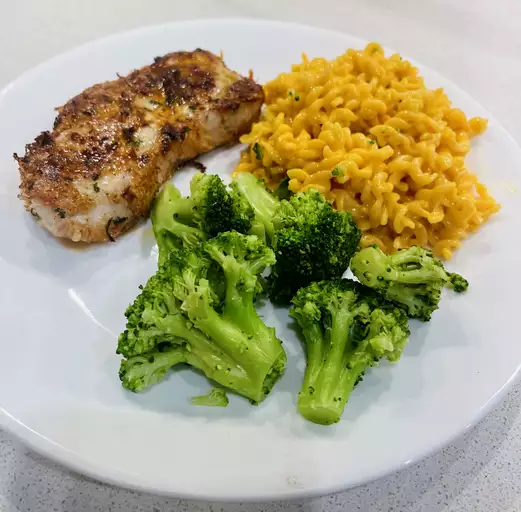
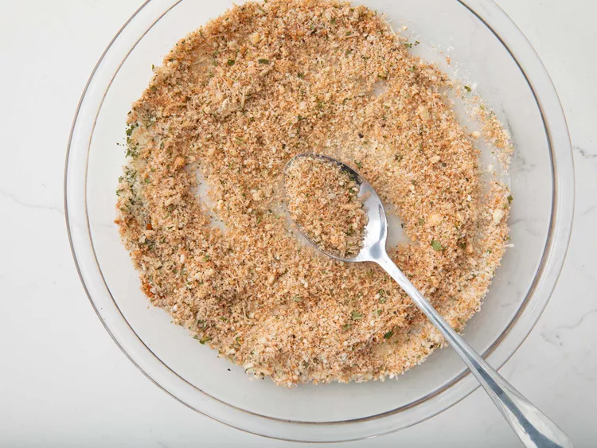
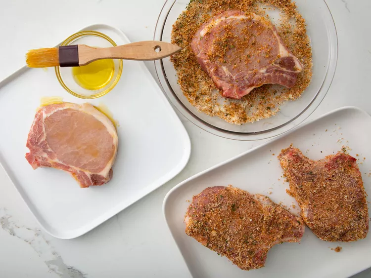
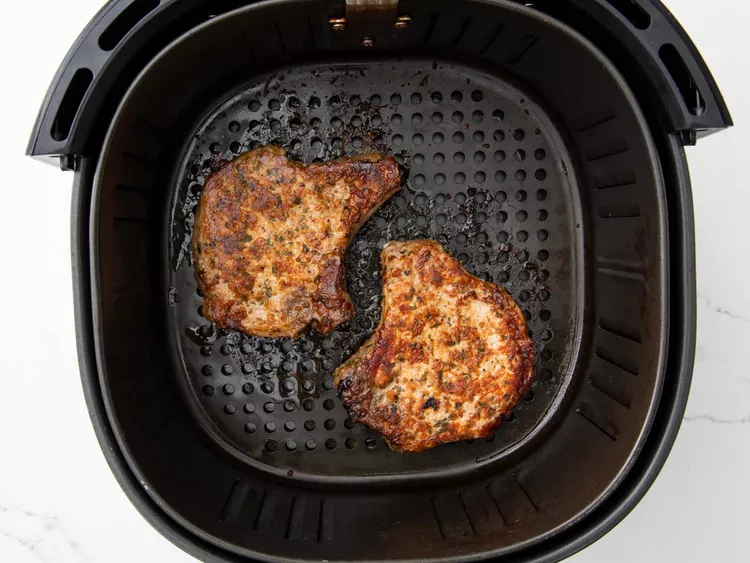

Easy Air Fryer Pork Chops
Boneless pork chops cooked to perfection in the air fryer. This recipe is so easy and you couldn't ask for a more tender and juicy chop.
- Prep Time: 5 mins
- Cook Time: 20 mins
- Total Time: 25 mins
- Servings: 4
Use your trusty air fryer to make the best (and easiest) pork chops of your life. Trust us — once you try this air fryer pork chop recipe, you'll never go back to your old method again.
Why Cook Pork Chops In the Air Fryer?
The air fryer's rapid air circulation yields pork chops that are crispy on the outside, yet flavorful and juicy on the inside. What more could you want in an easy pork chop recipe?
How to Make Air Fryer Pork Chops
Mix Parmesan, paprika, garlic powder, salt, parsley, and pepper in a shallow dish. Coat each pork chop in olive oil, then dredge in seasoned cheese mixture. Cook the pork chops, two at a time, in the preheated air fryer. Flip the pork chops halfway through cooking. Let the chops rest for a few minutes before serving.
How Long to Cook Pork Chops In the Air Fryer
This recipe should completely cook medium-sized pork chops in about 10 minutes in an air fryer set to 380 degrees F. Of course, since pork chops vary in thickness, it's best to test the temperature before you dig in. An instant read food thermometer inserted into the thickest part of the chop should read at least 145 degrees F.
What to Serve With Pork Chops
These delicious pork chops deserve an equally delicious side dish. Looking for some tasty inspiration? Explore our collection of 15 Best Side Dishes for Pork Chops. Here are a few of the recipes you'll find:
Green Beans and Mushroom Medley Awesome and Easy Creamy Corn Casserole Roasted Beet and Kale Salad
How to Store Air Fryer Pork Chops
Store leftover pork chops in an airtight storage container or tightly wrapped in foil in the refrigerator for up to three days. Reheat in an oven set to 350 degrees F (with a few drops of broth or water to prevent dryness) until the pork is heated through.
Allrecipes Community Tips and Praise
"This recipe was very good, quick, and easy," raves laurieb2508. "I added smoked paprika to add more flavor and a small amount of Panko breadcrumbs and it turned out great!"
"Super easy, delicious, and made with items that I have in my pantry," according to Lala.
"I made it [according to the recipe] and it was delicious," says Patricia Eib. "Served it with asparagus and sweet potatoes."
Ingredients
- ½ cup grated Parmesan cheese
- 1 teaspoon paprika
- 1 teaspoon garlic powder
- 1 teaspoon kosher salt
- 1 teaspoon dried parsley
- ½ teaspoon ground black pepper
- 4 (5 ounce) boneless pork chops
- 2 tablespoons extra virgin olive oil
Directions
step 1
Preheat the air fryer to 380 degrees F (190 degrees C).
step 2
Combine Parmesan cheese, paprika, garlic powder, salt, parsley, and pepper in a flat shallow dish; mix well.
step 3
Coat each pork chop with olive oil. Dredge both sides of each chop in the Parmesan mixture and set on a plate.
step 4
Place 2 chops in the basket of the air fryer and cook for 10 minutes; flipping halfway through cook time. Transfer to a cutting board and let rest for 5 minutes. Repeat with remaining chops.
step 5
Served hot and enjoy!

Recipe Tip
For easy cleanup and less mess, mix Parmesan mixture in a long flat-lidded plastic to-go container. Place one chop in at a time, snap the lid, and shake. Transfer coated chop to a plate and repeat with remaining chops. Perfectly coated chops every single time!
Nutrition Facts (per serving)
Calories: 305
Fat: 17g
Cards: 2g
Protein: 35g